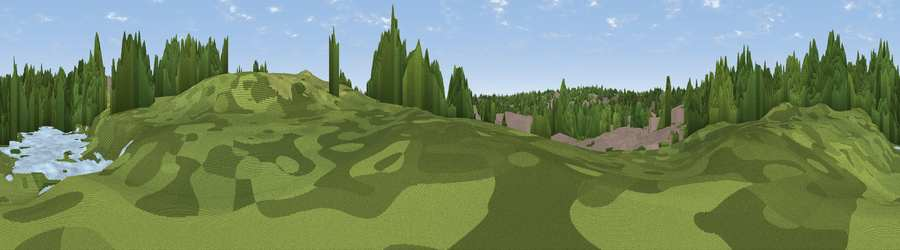

Viewpoint near Great Barr
#45977 in England · top 95% of its area beats it · near Great BarrWhere it is
The exact computed spot (SP 06170 94356). Click the marker for map links.
The view, rendered

A 360° render of this exact spot computed from the terrain model, tree cover and land cover — summer colours, afternoon light, calibrated against photographs of famous viewpoints. Real trees, hedges and buildings will differ in detail.
The panorama
Grey silhouette: terrain skyline in each direction (720 bearings, Earth curvature and refraction included). Dashed green: skyline with trees (+15 m) and buildings (+8 m) as obstacles. Blue strip: how far the ground is visible on each bearing.
Where the view opens
Wedge length = distance to the farthest visible ground on that bearing (vegetation-aware). Rings at 10, 25 and 50 km.
What fills the view
45% woodland · 31% grassland · 21% built-up · 2% water
Angular shares of the visible panorama (visual magnitude), not map area. Landscape diversity 0.49 (0–1 Shannon).
Key numbers
More beautiful places nearby
The staircase of upgrades: each row has a higher view potential than everything closer. Driving times are estimates from straight-line distance, calibrated against real road routing — check an actual route before setting out.
| Place | Direction | Drive | Score |
|---|---|---|---|
| Viewpoint near Great Barr | WNW · 1 km | ~4 min | 24.2 |
| Viewpoint near Great Barr | N · 2 km | ~6 min | 34.7 |
| Viewpoint near Great Barr | N · 3 km | ~7 min | 50.0 |
| Viewpoint near Streetly | N · 3 km | ~8 min | 69.5 |
| Viewpoint near Clent | SW · 19 km | ~32 min | 73.8 |
| Viewpoint near Clent | SW · 19 km | ~33 min | 74.3 |
| Knowle Hill | WSW · 39 km | ~58 min | 75.5 |
| Viewpoint near Abberley | SW · 40 km | ~60 min | 77.5 |
52.54702, -1.91044 · source: osm viewpoint · position refined by local search. Computed location — check access rights before visiting.